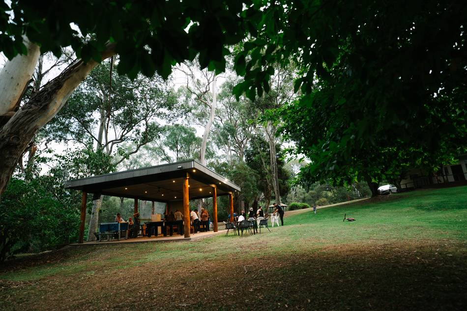

Two wineries sit just along the road from us: Ringer Reef Winery and Feathertop Winery. Both are close enough to walk to, and to walk home from.
Ringer Reef Winery
Ringer Reef is at 6835 Great Alpine Road, a little way along the road from our gate. Its cellar door opens from midday, and is closed on Tuesdays and Wednesdays. Hours change in winter, so check their website first.
You can book a seated, guided tasting for up to eight people, or a glass of wine and a share platter on the landing in the warmer months. You're also welcome to bring a blanket and picnic on their lawn. Book online, or ring them on (03) 5756 2805 for a group bigger than ten.
Feathertop Winery
Feathertop Winery is at 6619 Great Alpine Road, also a short way from our gate. It's a private estate, with a wine club, its own accommodation and events, so visits are by appointment. Ring them on (03) 5756 2356 to arrange a tasting.

Getting there from here
Walk, don't drive. Cross the road from our gate and follow the Rail Trail, which runs past Ringer Reef, rather than walking along the edge of the highway. Take a torch if you'll be coming home after dark.